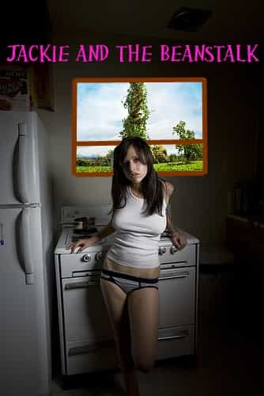
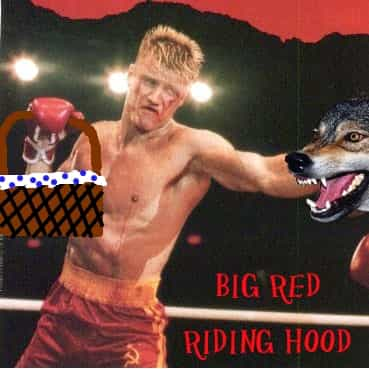
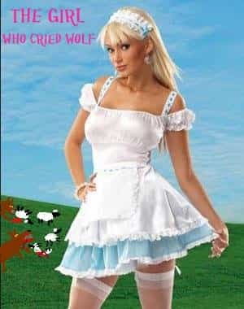
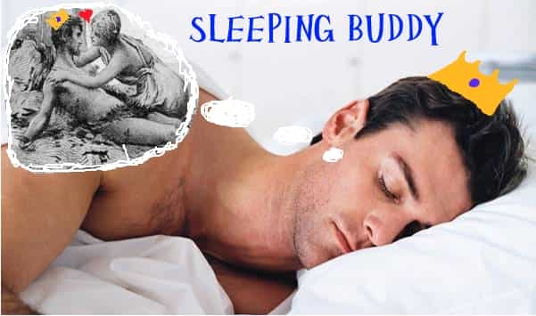

< < < Back
4 Gender Swapped Fairy Tales For The 21st Century – Return Of Kings
Stories have always been important for us. Stories of both good and evil have been told for generations, both to inspire humanity’s greatness and to warn of the folly of our vices.
The most popular and enduring stories come in the form of fables, more popularly known as fairy tales. Many of us as children have heard the classics, and some even managed to interred their lessons; Jack and the Beanstalk (bravery, risk and initiative lead to riches), Little Red Riding Hood (be wary of strangers and never let others decide your course for you), The Boy Who Cried Wolf (those who lie will never be believed when they tell the truth), and Sleeping Beauty (if you’re a hot and submissive woman an awesome man will come along and take care of you).
Unfortunately this is the twenty-first century and the simple Aesop’s and virtues classical fairy tales espouse no longer apply in our modern, progressive society. Telling children to be brave, strong and true to themselves and others is outdated and inapplicable when we have big governments watching out for our best interests with shadowy intelligence services and cameras on every street corner. We need not fear wolves from other countries since clearly the spice they bring to the culture is worth their violence – besides, if the village becomes too saturated with wolves one can always move to another suburb or gated community right?
It’s high time some new fairy tales were written for the children of today, to teach them lessons about how to be a 21st century human being. One of the easiest ways to do this is simply to swap the genders in traditional stories and retell them from a new male/female perspective. As a future Oscar winner for Best Original Softcore Screenplay, Billaim Chubbenski has taken it upon himself to get the ball rolling. So for those of you with children, download these delectable fables onto your Kindle, turn the mercury filled fluorescent lights low and the fake fireplace bright and shut your six year old’s cell phone off for a few minutes because Billy Chubbs humbly presents…
4 GENDER SWAPPED FAIRY TALES FOR THE 21st CENTURY

Jackie And The Beanstalk
Once upon a time there was a girl named Jackie who lived with her widower father on their small farm. Jackie’s father treated her like a little princess and even though they weren’t well off he always made sure Jackie was well fed and kept her up with the latest fashions. Eventually Jackie’s expensive tastes pushed the father to near poverty. Jackie’s father still loved her regardless, and as her sixteenth birthday approached he decided to sell their last cow to buy her a sweet sixteen gift. However, since he literally did all the work on the farm and had no time to spare, he had to send Jackie into the city to sell the cow. She protested adamantly, crying and begging several times not to go but for the first time in her life Jackie’s daddy remained firm. So, bitter and bitchy, Jackie took the cow into town to sell.
When Jackie reached the market she saw the La Senza stall had several cute pairs of boy shorts on display. Jackie asked how much they cost. The business savvy stall owner said they were very expensive but that Jackie’s cow – which was worth far more then all his wares combined – might cover the cost of two or three pairs. Since Jackie was a woman, and therefore had no sense of the inherent value of things, she eagerly agreed.
At that moment a completely creepy guy ran up and told Jackie to wait. “If you’re going to sell your cow for such a low price young lady, then perhaps you’d prefer to buy these beans of mine instead? They’re magic, and when planted will lead you to riches far beyond your imagination!”
“Ew! Get away from me!” Jackie shouted, shrinking away from the creepy man.
Jackie then sold her father’s cow for three pairs of boy shorts. While she shopped, Jackie’s neighbour Jack, a boy her age, came into town with his family’s cow and made a deal with the creepy guy, exchanging his cow for the magic beans.
Jackie went home, hid her clothes and told her daddy that some black highwaymen had mugged her and taken the cow. Her father told her he was just glad that Jackie was safe and decided to sell his good shovel in order to buy her a birthday present.
A few days later a giant beanstalk appeared in the neighbour’s yard, and stories quickly spread about how the young Jack climbed the stalk and found riches beyond imagining. Jackie’s father jealously listened to these tales, but he figured that such was the luck of life and who needed material riches when he had such a wonderful and loving daughter.
Eventually Jackie’s father became destitute and she left him to move in with a rich old duke. Jackie spent the duke’s money and cheated on him with the local men.
And she lived happily ever after.
THE END

Big Red Riding Hood
Deep in the forest lived Big Red and his father. One day his father marinated up some juicy steaks and put them in a basket with a six pack of beer.
“Take these and go visit your grandpa,” Big Red’s father said.
“You got it,” Big Red said. After all, as a man he appreciated his family and didn’t view visiting his older relatives as a burden.
So Big Red set off along the path through the woods to visit his grandpa. As he was walking along a big bad wolf suddenly stepped out of the trees.
“Where are you going?” the wolf asked hungrily, smacking it’s lips at the basket in Big Red’s hand.
“None of your business,” Big Red said, knowing that wolves meant nothing but trouble. He ignored out of hand how the villager’s safe outside the forest always said that wolves shouldn’t be pre-judged just because they’re wolves.
“What if I make it my business?” the wolf asked angrily.
Big Red quickly took off his shirt, setting the basket on the ground. “We doin’ this?!” he shouted, raising his arms up.
Seeing that Big Red wasn’t a pansy the wolf turned and fled down the path. The wolf knew there was an old man in a house down the way and it figured that Big Red must be going there. The wolf decided to kill the old man, disguise itself as him and try to murder Big Red.
The wolf arrived at the house of Big Red’s grandpa, banging on the door and pretending to be Big Red. Since grandpa was a man living alone in the dangerous woods he didn’t open up his door right away like an idiot. He looked out the window and saw the wolf waiting by the door. Grandpa owned a lot of muskets because he wasn’t some village dwelling bleeding heart who utterly relied on the inept and physically out of shape constabulary to protect him and he lazily blew the wolf away. A short while later Big Red arrived. They cooked up the steaks and the wolf meat, and when Big Red went back home he had an awesome new wolf fur Ushanka to show his father.
And they lived happily ever after.
THE END

The Girl Who Cried Wolf
Once upon a time a hard-working shepherd broke his ankle and had to make his daughter look after their sheep. After much complaining she reluctantly obeyed and went out to the pasture. Utterly bored with this job, knowing that she could be in town hanging out with cute barony boys, the shepherd’s daughter sat on a rock and mulled over how much her life totally sucked.
Then she noticed that, over in the next field, two cute shepherd boys were looking after their own sheep. Wondering how to get their attention she remembered that the community feared wolves and that any cry of wolf brought all men in the vicinity running.
“Wolf!” she cried as loud as she could. “Wolf! LIKE, THERE’S SERIOUSLY A FRICKIN’ WOLF OR SOMETHING OVER HERE!”
And sure enough all the surrounding men came running. Unfortunately, in addition to the two cute shepherds several dull looking guys also showed up. When they asked where the wolf was the shepherd’s daughter lied and said they just missed it or whatever, but the two cute guys should totally stay and hang out.
They did, and every day thereafter the shepherd’s daughter cried wolf, and everyday the men always came running since she was a girl and they were desperate just to be around her. She and the two cute shepherds flirted and fooled around while the other shepherds, hoping to gain her gratitude, looked after her sheep while she went off with the cute guys. In fact the other shepherds also looked after the sheep of the two cute guys as well when they stole off with the shepherds daughter, fooling themselves into believing that the three of them were just good friends and that the shepherd’s daughter would totally be appreciative of them looking after her friend’s sheep.
One day a real wolf came out of the woods. The shepherd’s daughter shouted, “WOLF! OH MY GOD LIKE THERE’S A REAL WOLF NOW!” And like every other time, without hesitation, all the surrounding men came running to help. The two cute shepherds cleverly stood back with the shepherd’s daughter, making it look as though they were protecting her while being out of any real danger, while the other shepherds – eager to prove themselves to her – courageously fought the wolf. Many died, and the survivors were horribly mauled and suffered with post traumatic stress disorders for the rest of their lives.
The community then rewarded the shepherd’s daughter since she was the one who alerted them to the danger. The survivors got only a passing mention of praise but they told themselves it was worth it when the shepherd’s daughter gave them each a hug. The two cute shepherds got to do anal with her since they were so totally brave in protecting her from the wolf. The community never doubted her words, even though she continued to cry wolf for years thereafter.
And she lived happily ever after.
THE END

Sleeping Buddy
Once upon a time a witch got on her period and placed a curse upon a King. She declared that any of his sons who pricked their fingers on a rose thorn would fall into an enchanted sleep and only the kiss of their true love would awake them.
The King eventually had a son and a daughter. The Prince grew up to be handsome and charming. One day he went riding with a baron’s daughter. They passed a rose garden. The baron’s daughter told the Prince to get her a rose. Despite being told to be wary of roses the Prince really wanted to get inside the girl’s corset so he braved it. While pulling a rose he pricked his finger on its thorns and fell into a deep sleep.
The King, depressed and despairing, had the Prince enshrined in a far-off fortress. Eventually fields of thorns grew up around the decaying walls – plus for some reason a dragon started hanging out in the area because they’re dicks like that.
And the prince never woke up, since decades of prosperity had made the women of the land inherently incapable of loving anyone but themselves and their material goods. And even if they could love, no women in the land also possessed the bravery or strength or even the basic initiative to not only cross a field of thorns but then fight a dragon on the other side.
So the King had to give his kingdom over to his daughter, whom enacted feminism upon the start of her reign. Soon the majority of the men became pansies, women became disgustingly promiscuous, and politically correct policies bent to overwhelmingly favour women and the dregs of the kingdom forced intelligent and masculine men to flee to other lands. Work ethic plummeted and the median age of the population rose rapidly since women refused to have more then one or two children, usually waiting until they were entering middle age before conceiving. Barbarians from outside the borders were welcomed in en masse by evil businessmen who wanted to deflate the wages of all and any citizens who voiced concern over this were labelled as evil bigots.
Eventually the kingdom became bankrupt and succumbed to the barbarians. The women were then enslaved, regularly beaten and forced to wear veils over their faces while the remaining pathetic men were turned into third class citizens and sent off to die in wars and were eventually bred out of existence.
And no one lived happily ever after.
THE END
Read More: Building A Bridge To The 18th Century


{kind=link}
{kind=link}
{kind=link}
{kind=link}